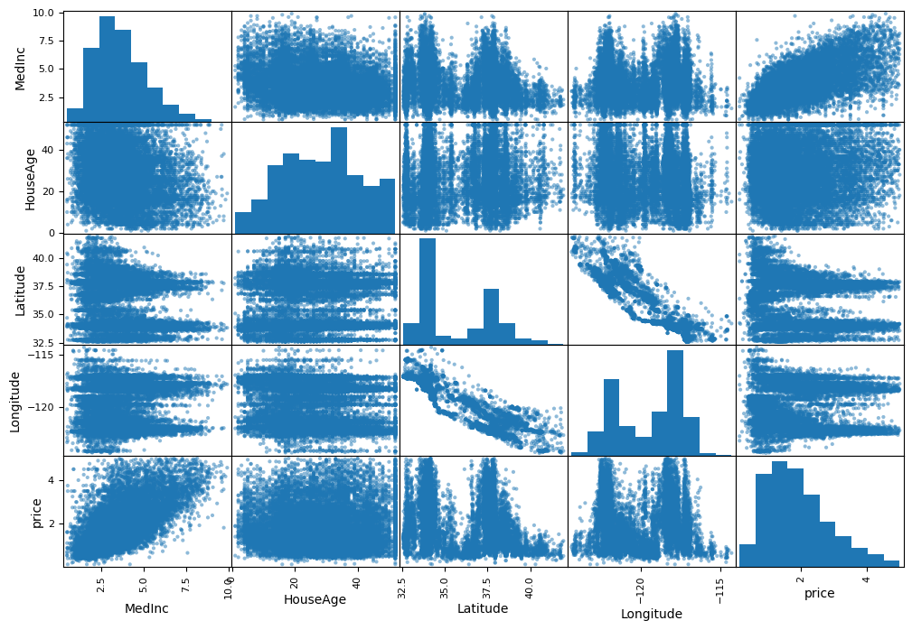
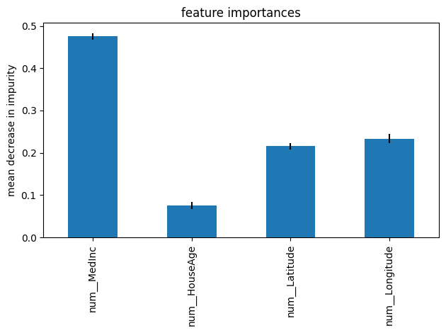

import pandas as pd
from sklearn.model_selection import train_test_split
housing_data = pd.read_csv('housing_data.csv')
train_set, test_set = train_test_split(housing_data, test_size=0.2, random_state=42)
from sklearn.pipeline import make_pipeline
from sklearn.compose import ColumnTransformer
from sklearn.compose import make_column_selector
from sklearn.preprocessing import MinMaxScaler
import numpy as np
X_train = train_set.drop(['price'], axis=1)
num_pipeline = make_pipeline(MinMaxScaler(feature_range=(0, 1)))
preprocessing = ColumnTransformer([("num",num_pipeline, make_column_selector(dtype_include=np.number))])
from sklearn.neighbors import KNeighborsRegressor
NN_reg = make_pipeline(preprocessing, KNeighborsRegressor())
NN_reg.get_params().keys()
dict_keys(['memory', 'steps', 'transform_input', 'verbose', 'columntransformer', 'kneighborsregressor', 'columntransformer__force_int_remainder_cols', 'columntransformer__n_jobs', 'columntransformer__remainder', 'columntransformer__sparse_threshold', 'columntransformer__transformer_weights', 'columntransformer__transformers', 'columntransformer__verbose', 'columntransformer__verbose_feature_names_out', 'columntransformer__num', 'columntransformer__num__memory', 'columntransformer__num__steps', 'columntransformer__num__transform_input', 'columntransformer__num__verbose', 'columntransformer__num__minmaxscaler', 'columntransformer__num__minmaxscaler__clip', 'columntransformer__num__minmaxscaler__copy', 'columntransformer__num__minmaxscaler__feature_range', 'kneighborsregressor__algorithm', 'kneighborsregressor__leaf_size', 'kneighborsregressor__metric', 'kneighborsregressor__metric_params', 'kneighborsregressor__n_jobs', 'kneighborsregressor__n_neighbors', 'kneighborsregressor__p', 'kneighborsregressor__weights'])
from sklearn.model_selection import GridSearchCV
y_train = train_set['price']
param_grid = [{'kneighborsregressor__n_neighbors': [1,2,3,4,5,6,7,8,9,10,11,12,13,14,15,16,17,18,19,20],
'kneighborsregressor__weights': ['uniform','distance']
}]
grid_search = GridSearchCV(NN_reg, param_grid, cv=5, scoring='r2')
grid_search.fit(X_train, y_train)
cv_hyperpara = pd.DataFrame(grid_search.cv_results_)
cv_hyperpara.sort_values(by="mean_test_score", ascending=False, inplace=True)
cv_hyperpara.head()
| mean_fit_time | std_fit_time | mean_score_time | std_score_time | param_kneighborsregressor__n_neighbors | param_kneighborsregressor__weights | params | split0_test_score | split1_test_score | split2_test_score | split3_test_score | split4_test_score | mean_test_score | std_test_score | rank_test_score | |
|---|---|---|---|---|---|---|---|---|---|---|---|---|---|---|---|
| 23 | 0.011175 | 0.000258 | 0.028831 | 0.000265 | 12 | distance | {'kneighborsregressor__n_neighbors': 12, 'knei... | 0.670742 | 0.680968 | 0.662752 | 0.666473 | 0.668700 | 0.669927 | 0.006124 | 1 |
| 25 | 0.011178 | 0.000248 | 0.030225 | 0.000171 | 13 | distance | {'kneighborsregressor__n_neighbors': 13, 'knei... | 0.671057 | 0.680536 | 0.661354 | 0.666927 | 0.668077 | 0.669590 | 0.006312 | 2 |
| 27 | 0.011216 | 0.000150 | 0.031458 | 0.000241 | 14 | distance | {'kneighborsregressor__n_neighbors': 14, 'knei... | 0.670876 | 0.681532 | 0.659678 | 0.665593 | 0.667412 | 0.669018 | 0.007234 | 3 |
| 21 | 0.011561 | 0.000374 | 0.029980 | 0.000583 | 11 | distance | {'kneighborsregressor__n_neighbors': 11, 'knei... | 0.667990 | 0.680137 | 0.662097 | 0.666669 | 0.667890 | 0.668957 | 0.005989 | 4 |
| 19 | 0.012436 | 0.001241 | 0.030764 | 0.002508 | 10 | distance | {'kneighborsregressor__n_neighbors': 10, 'knei... | 0.667891 | 0.678615 | 0.662262 | 0.666359 | 0.669235 | 0.668872 | 0.005404 | 5 |
Let us train a second model where we focus on the feature which we think are most important. Longitude and Latitude because this will assign a certain city district and the median income. Maybe the House Age is not overall important.
X_train = train_set.drop(['price','HouseAge'], axis=1)
param_grid = [{'kneighborsregressor__n_neighbors': [1,2,3,4,5,6,7,8,9,10,11,12,13,14,15,16,17,18,19,20],
'kneighborsregressor__weights': ['uniform','distance']
}]
grid_search = GridSearchCV(NN_reg, param_grid, cv=5, scoring='r2')
grid_search.fit(X_train, y_train)
cv_hyperpara = pd.DataFrame(grid_search.cv_results_)
cv_hyperpara.sort_values(by="mean_test_score", ascending=False, inplace=True)
cv_hyperpara.head()
| mean_fit_time | std_fit_time | mean_score_time | std_score_time | param_kneighborsregressor__n_neighbors | param_kneighborsregressor__weights | params | split0_test_score | split1_test_score | split2_test_score | split3_test_score | split4_test_score | mean_test_score | std_test_score | rank_test_score | |
|---|---|---|---|---|---|---|---|---|---|---|---|---|---|---|---|
| 19 | 0.015029 | 0.007306 | 0.022350 | 0.003355 | 10 | distance | {'kneighborsregressor__n_neighbors': 10, 'knei... | 0.748648 | 0.755226 | 0.738884 | 0.735110 | 0.744857 | 0.744545 | 0.007100 | 1 |
| 21 | 0.010127 | 0.000175 | 0.019704 | 0.000405 | 11 | distance | {'kneighborsregressor__n_neighbors': 11, 'knei... | 0.748396 | 0.755132 | 0.738510 | 0.735626 | 0.744828 | 0.744499 | 0.006971 | 2 |
| 15 | 0.009615 | 0.000140 | 0.016406 | 0.000577 | 8 | distance | {'kneighborsregressor__n_neighbors': 8, 'kneig... | 0.746236 | 0.755875 | 0.738176 | 0.734432 | 0.746463 | 0.744236 | 0.007447 | 3 |
| 17 | 0.018312 | 0.010022 | 0.029951 | 0.013653 | 9 | distance | {'kneighborsregressor__n_neighbors': 9, 'kneig... | 0.747545 | 0.756424 | 0.738439 | 0.733150 | 0.745324 | 0.744176 | 0.007964 | 4 |
| 23 | 0.022678 | 0.007683 | 0.038542 | 0.009768 | 12 | distance | {'kneighborsregressor__n_neighbors': 12, 'knei... | 0.746947 | 0.756042 | 0.737780 | 0.734804 | 0.744188 | 0.743952 | 0.007443 | 5 |
Is there a hint why I should select this input feature? We plot initially the scatter matrix.
from pandas.plotting import scatter_matrix
import matplotlib.pyplot as plt
attributes = ["MedInc", "HouseAge", "Latitude", "Longitude", "price"]
scatter_matrix(train_set[attributes], figsize=(12, 8))
plt.show()

We see the data of the HouseAge versus the price shows data nearly everywhere in the plot. There are no preferred regions as in the other plots of the input features versus the price. Furthermore, the HouseAge shows a similar behavior to the input features. Therefore, it seems reasonable to remove this feature first and check, if this will improve our model. An Alternative would be to train a Random Forest Regression and determine the feature importance. As you can see, the HouseAge is the feature with the lowest impurity decrease.
from sklearn.ensemble import RandomForestRegressor
model_forest = make_pipeline(preprocessing, RandomForestRegressor(min_samples_split=2, n_estimators=50,
criterion='squared_error', random_state=42))
X_train = train_set.drop(['price'], axis=1)
model_forest.fit(X_train, y_train)
feature_importances = model_forest['randomforestregressor'].feature_importances_
std = np.std([tree.feature_importances_ for tree in model_forest['randomforestregressor'].estimators_], axis=0)
forest_importances = pd.Series(feature_importances, index=model_forest['columntransformer'].get_feature_names_out())
fig, ax = plt.subplots()
forest_importances.plot.bar(yerr=std, ax=ax)
ax.set_title("feature importances")
ax.set_ylabel("mean decrease in impurity")
fig.tight_layout()
sorted(zip(feature_importances, model_forest['columntransformer'].get_feature_names_out()),reverse=True)
[(np.float64(0.475283061542539), 'num__MedInc'),
(np.float64(0.2338191383131208), 'num__Longitude'),
(np.float64(0.21568326093410062), 'num__Latitude'),
(np.float64(0.07521453921023953), 'num__HouseAge')]
